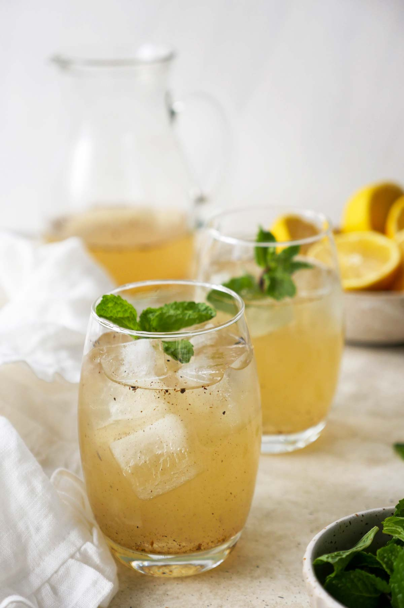

Serves 2
Shikanji, an indian variant of lemonade, is sold around every corner in india during summer. from every mother's childhood to our childhood this drink not only brings back memories but also our energy.
With only few ingredients, you can ready yourself up for a whole day. During travelling, this drink can be a great alternative to water.
Shikanji is also called nimbu-pani in India. which translates to lemon-water. Besides the basic ingredients, some spices like chaat masala and cumin powder are also added for more flavour.